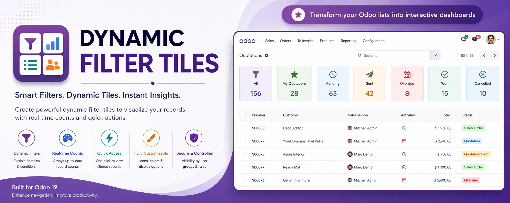
Every team asks the same few questions about a list: how many are
late, how many are waiting on me,
what did we win this month. Today the answer is a filter
somebody has to remember, or a dashboard nobody can edit.
This module puts the answers on top of the list itself.
If it has a list or a kanban view, it can have tiles — sitting between the control panel and the records, where everybody already looks. Each one is a label, a live number, a trend, and a filter behind it.
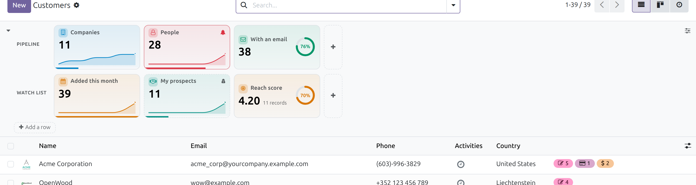
Two named rows on Contacts: sparklines, a goal ring at 76%, a private tile, and one tile past its threshold.
Click one and it becomes an ordinary, removable search facet — every other filter keeps working, and the neighbouring tiles recount themselves against what is left. Select several and choose whether records must match any of them or all.
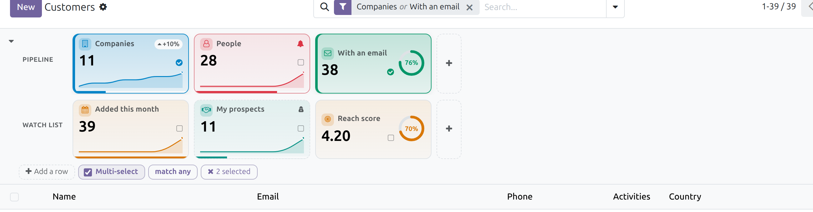
The Multi-select checkbox beside “Add a row” is on: every click adds to the selection, and “match all” makes both facets apply at once. Ctrl-click does the same without the mode.
A tile answers how many. One click answers of what — split by status, salesperson, country or month, in a single grouped read.
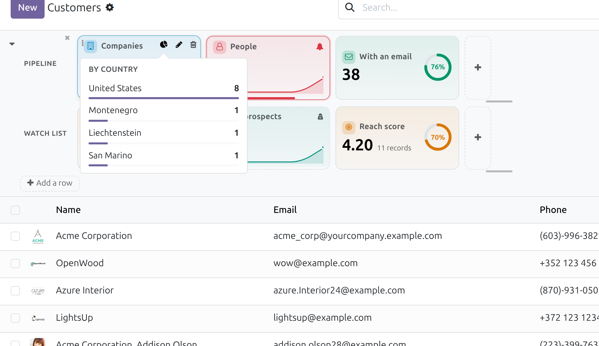
One row is rarely enough. Add up to six, name them in the pane down their left, drag tiles between them, and give each row its own height. Drag a tile's edge and it keeps that width for everybody.
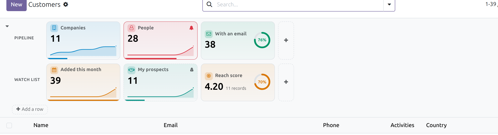
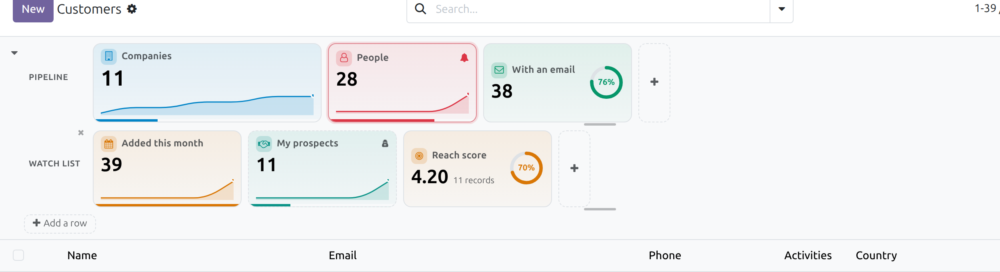
Nothing is ever clipped: on a short row a tile drops its sparkline, then its sub-label, then the number steps down a size.
Give a tile a limit and it stops being decorative: it turns into a warning the moment the number crosses the line, and — if you ask it to — tells you even when nobody has the view open.
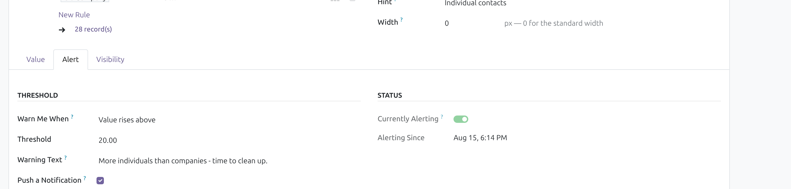
Tiles live above a view, which makes them invisible until you go looking. The Wall turns them into a morning overview — grouped by model, alerting tiles first — and each one still opens its records, filtered. “Live” refreshes it every minute.
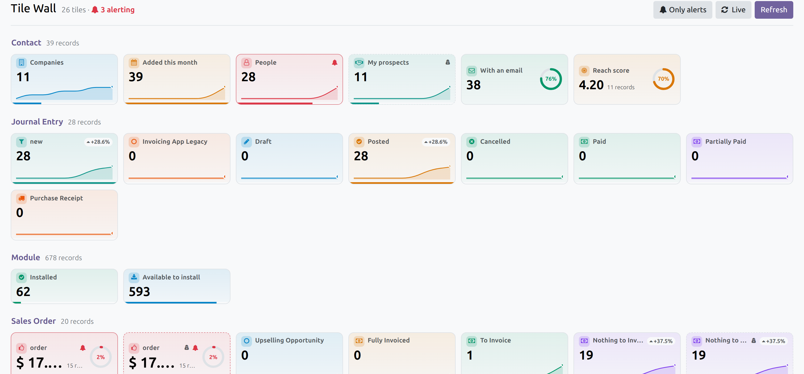
No developer, no upgrade, no XML. Filter your list the way you always do, then capture it.
Search bar, filters, group-bys — whatever gets you to the records you care about.
The ghost tile at the end of any row. Your tile is born with exactly that domain.
Yours alone, or published to the whole company in one click.
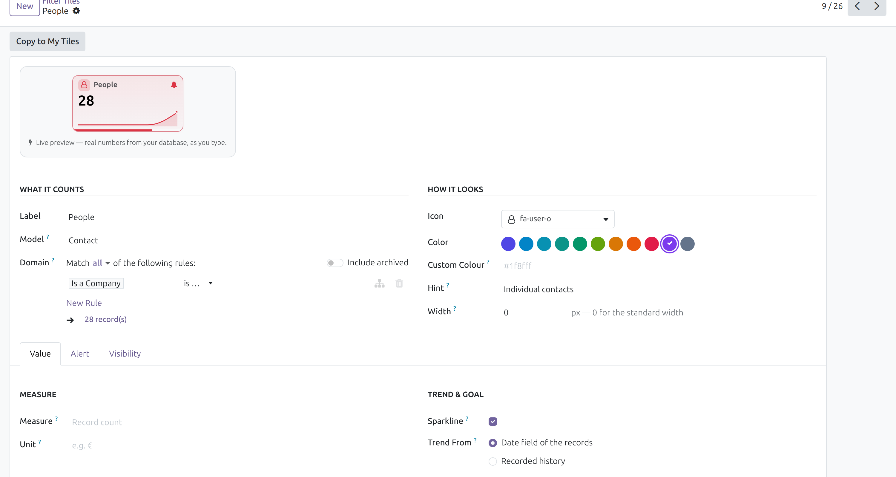
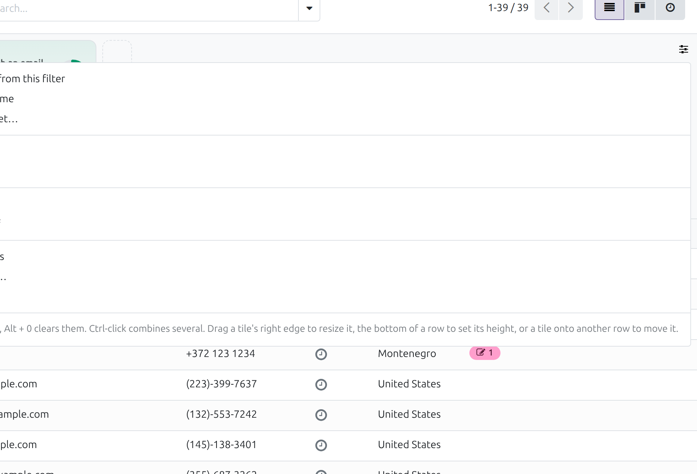
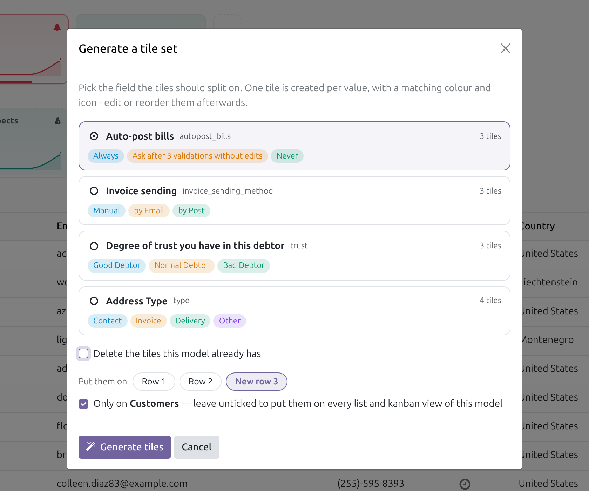
The studio menu holds everything a manager needs; the generator builds a whole colour-coded ribbon from a status field, on the row and the menu you choose.
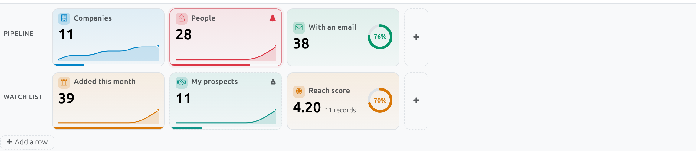
A count or a measure, a sparkline or a goal ring, a warning, a private badge — and a share bar showing what slice of the view it holds.
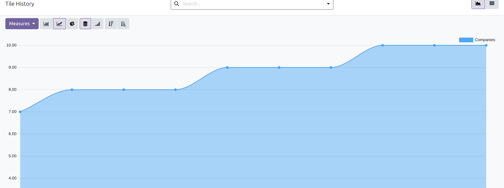
Group the records on a date field, or let a nightly job record the tile's own value — which works on models with no date field at all.
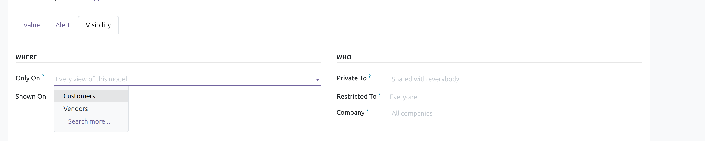
Customer invoices, vendor bills and journal entries are all account.move. Pin a tile to the menu it belongs to and the others stay clean.
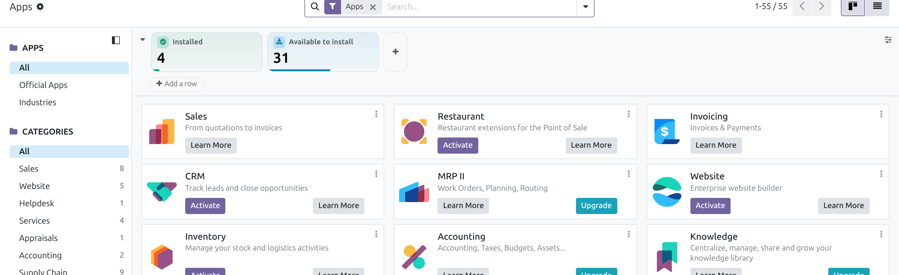
Kanbans, views with a search panel, dashboards other modules build on the list view, models made with Studio — the ribbon rides the standard controllers.
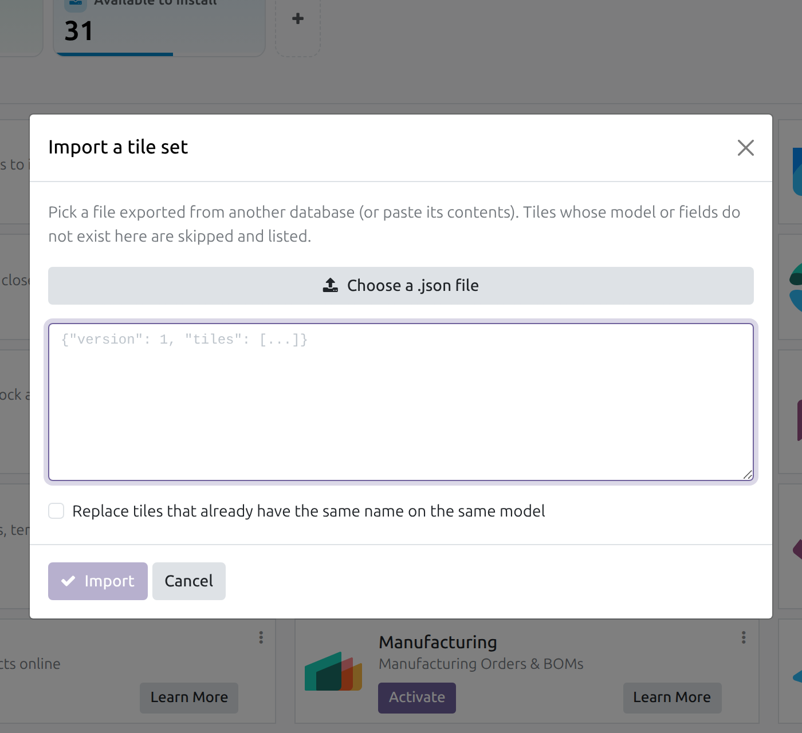
Export a ribbon as JSON and import it elsewhere. Fields match by name, menus by external id, and anything missing is reported rather than fatal.
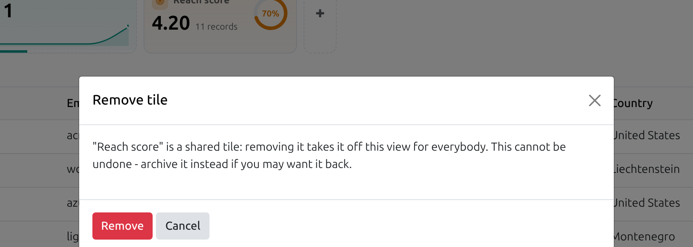
Remove a tile behind a confirmation that says who it affects. Delete a row and its tiles are not deleted — they join the row above.
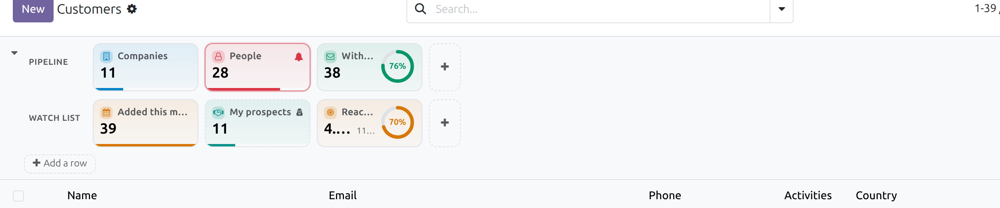
Compact or comfortable, collapsed or open, auto-refresh off or every 30 seconds — kept per model, in your browser, without touching what colleagues see.
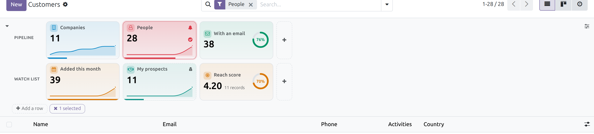
Alt+1…9 applies a tile, Alt+0 clears them. The number shows on hover, so it teaches itself.
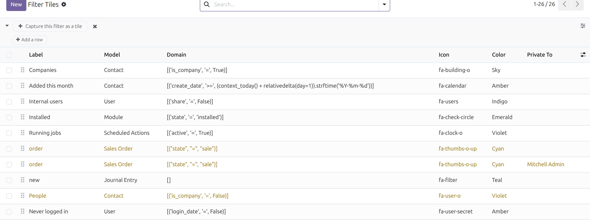
Searchable, groupable, multi-editable, archivable, translatable and exportable like anything else in Odoo — one list manages them all.
One package, every deployment. Built entirely on the standard web client: it depends on web and bus — present in every Odoo installation — and imports nothing from any Enterprise-only module, so nothing about it changes between editions.
Fully supported. Every screenshot on this page was taken on a Community 19 database.
Fully supported. Enterprise ships the same web client, and the ribbon rides the standard list and kanban controllers.
Push it to your branch like any other addon. No system package, no server flag, no external service, no build step.
Drop it in your addons path and install. No core view is modified and no core record is touched.
A tile is a filter with a number, so the good ones are the questions your team already asks out loud every morning.
Dashboard modules usually force a choice between “everybody sees it” and “nobody may build one”. Here both exist — and it is the record rules, not the interface, that keep them apart.
| Any internal user | Filter Tiles / Manager | |
|---|---|---|
| Use the tiles, break them down, set density and row heights | Yes | Yes |
| Build tiles only they can see | Yes | Yes |
| Take a private copy of a shared tile | Yes | Yes |
| Publish a tile to everybody | No | Yes |
| Edit, resize, reorder, generate and delete the shared ribbon | No | Yes |
Cached once per session. Opening a list view of a model without tiles costs exactly zero extra round-trips.
Ten tiles are one batched call, debounced against the search bar — and a stale answer can never overwrite a fresh one.
Values load beside the records, never in front of them. If the service fails, the view still opens — the ribbon simply is not there.
Every number is counted as you, without sudo. A tile can never surface a record you are not allowed to open.
Three small models, one technical group, two scheduled actions. No modified views, no patched records — uninstall and every trace goes with it.
An automated suite ships with the module, covering values, thresholds, history, breakdowns, layout, import/export and the whole permission matrix.
| Odoo version | 19.0 — Community, Enterprise and Odoo.sh |
|---|---|
| Dependencies | web, bus — no Enterprise module, no external Python package, no external JS library |
| Adds | filter.tile, filter.tile.row, filter.tile.snapshot, one technical group, two scheduled actions, one client action |
| Views covered | Every list and kanban view, including inherited ones and models built with Studio |
| Values | Record count, or sum / average / max / min of any stored integer, float or monetary field |
| Domains | The full Odoo domain language, including context_today(), uid, relativedelta |
| Layout | Up to 6 nameable rows; tile width 120–520 px; row height 56–320 px; compact / comfortable density |
| Multi-company | Tiles can be pinned to a company; a global record rule keeps them there |
| Translations | Labels, hints and warning texts are translatable; a .pot template is included |
| Accessibility | Keyboard operable, ARIA-labelled, honours prefers-reduced-motion |
| Licence | OPL-1 |
No. Filter the list the way you normally would, click the “+” tile, give it a name and a colour. Everything else — icon, measure, trend, threshold, width — is optional.
All three, from the same package. It depends only on web and bus, which every Odoo installation has, and imports nothing Enterprise-only. On Odoo.sh it is an ordinary addon — push it to your branch.
Tile definitions are cached per session, and a whole ribbon of values is one batched call that runs beside the records rather than before them. A model with no tiles costs nothing.
No. Every number is counted with the reader's own access rights and record rules. The two background jobs — recorded history and the threshold check — run as the tile's owner for a private tile, and server-side for a shared one, because a stored daily number has to be the same number for everybody.
They are ordinary records in your database, not code. Upgrading keeps them, and you can export a ribbon to JSON to carry it into another database.
Yes. Tiles are attached to a model, not to a view file, so anything with a list or kanban view qualifies — including models you created yourself.
Only Filter Tiles managers publish, edit, reorder or delete shared tiles. Everybody else builds private tiles and takes private copies — usually exactly what they wanted.
Everything the module added goes with it: the models, the group, the scheduled actions and the tiles themselves. No core view or record was modified, so nothing is left behind.
Install it, open any list, and hit the + tile. That is the whole setup.
Questions, a feature you need, or a hand installing it?
ebinpg777@gmail.com
Dynamic Filter Tiles — built and supported by Ebin P G